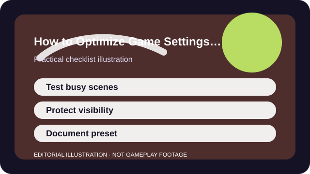

QUICK ANSWER
The short version
Measure the busy scenes that actually stutter, lower the most expensive settings first, and stop when stability improves without making the game unreadable.
Average FPS alone is a poor goal. A configuration that looks strong in menus can still feel bad in the exact moments when effects, players, and rapid camera movement all show up together.
The better target is stability you can trust. That means acceptable frame time during the scenes that matter while still preserving the visual information you need to read enemies, objectives, and interfaces.

CHECKLIST
What to confirm before you change anything
- Update the game and graphics software through normal supported tools before tweaking anything else.
- Record the current preset so the whole process is reversible.
- Choose one effects-heavy scene, map, or replay segment as your repeatable test bed.
- Close background downloads, launchers, or tabs that can distort the comparison.
- Define your acceptable floor before testing so you know when to stop chasing numbers.
Without a clear test scene and a target floor, it is easy to mistake random variance for improvement and keep stripping settings long after the useful gains are done.
SCENARIO
When menus feel smooth but real matches fall apart
A common trap is lowering settings based on a quiet range or lobby, then discovering the big frame drops still happen the moment smoke, particles, streaming assets, or multiple players arrive together. That tells you the quiet scene was never the real test.
By picking one repeatable heavy scene, you can compare meaningful changes. The goal is not the biggest number on the counter. It is predictable behavior in the exact moments when the game usually betrays your setup.
PROCESS
A repeatable way to work through it
Identify the expensive categories first
Shadows, post-processing, reflections, view distance, and effects often move the needle more than texture settings on a system with enough VRAM.
Lower visibility-safe settings before readability-critical ones
Preserve silhouettes, subtitles, interface clarity, and any setting that helps you interpret the action unless it clearly causes the slowdown.
Set a sane frame cap if needed
A moderate cap can produce more stable frame time than chasing every possible peak, especially on uneven hardware.
Retest in the same heavy scene
If the improvement does not show up where the problem actually lived, it was not the right change.
Once the busy-scene result is good enough, stop. A stable preset you understand is more valuable than a slightly higher number produced by constant second-guessing.
COMMON MISTAKES
What usually makes the problem worse
Benchmarking only quiet areas
Menus, empty lobbies, and static scenes rarely reflect the moments where the game becomes unreadable.
Dropping everything to the lowest setting
The most aggressive preset can erase useful information without solving the real bottleneck.
Changing game, driver, and OS behavior simultaneously
When too many layers move together, you cannot tell which change created the benefit or the new problem.
SUCCESS CRITERIA
How to know the change actually worked
- Busy fights no longer collapse into obvious frame-time spikes or hitching.
- Enemy readability, UI clarity, and subtitle legibility stay good enough for normal play.
- The final preset is simple enough to recreate after a patch or reinstall.
- You can describe which setting changes helped and which ones were placebo.
A good performance preset protects your decisions. You should stop thinking about the counter and start trusting the game to stay readable when the screen gets busy.
SOURCES AND LIMITS
Where to verify live details
- Thermal throttling, failing hardware, or power-mode issues may dominate the problem no matter what the in-game preset says.
- Network lag and input delay are different issues even when they feel similar in the moment.
- Laptop, handheld, and desktop constraints differ too much for one universal settings chart.
Menu names, defaults, and device behavior can change after updates. Use the linked official support surfaces for the current live details and keep this guide for the process around them.